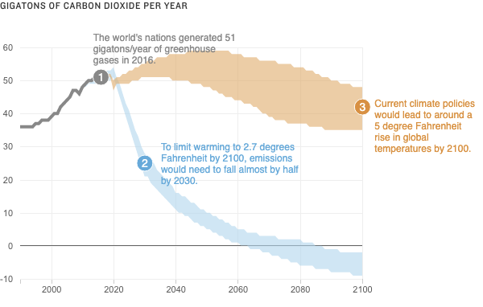

<%= await t.include("lib/_head.html") %>

<% if (COPY.labels.headline) { %>
<h1><%= t.smarty(COPY.labels.headline) %></h1>
<% } %>

<% if (COPY.labels.subhed) { %>
<h2><%= t.smarty(COPY.labels.subhed) %></h2>
<% } %>

<div id="line-chart" class="graphic" role="img"
<% if (COPY.labels.screenreader) { %>
  aria-label="<%- COPY.labels.screenreader %>"
<% } %>
>
  
</div>

<div class="value-label mobile">
  <div class="label-item">
    <span class="icon historical">1</span>
    <span class="anno-text"><%= t.smarty(COPY.labels.label_0) %></span>
  </div>
  <div class="label-item">
    <span class="icon paris">2</span>
    <span class="anno-text"><%= t.smarty(COPY.labels.label_2) %></span>
  </div>
  <div class="label-item">
    <span class="icon current">3</span>
    <span class="anno-text"><%= t.smarty(COPY.labels.label_1) %></span>
  </div>
</div>

<% if (COPY.labels.footnote) { %>
<div class="footnotes">
  <h4>Notes</h4>
  <p><%= COPY.labels.footnote %></p>
</div>
<% } %>

<div class="footer">
  <% if (COPY.labels.source) { %><p>Source: <%= COPY.labels.source %></p><% } %>
  <% if (COPY.labels.index_credit) { %><p>Credit: <%= COPY.labels.index_credit %></p><% } %>
</div>

<script type="text/javascript">
  var DATA = <%= JSON.stringify(COPY.data_deaths) %>;
  var LABELS = <%= JSON.stringify(COPY.labels) %>;
  var TYPE = "deaths";
</script>

<script src="./graphic.js"></script>

<%= await t.include("lib/_foot.html") %>
